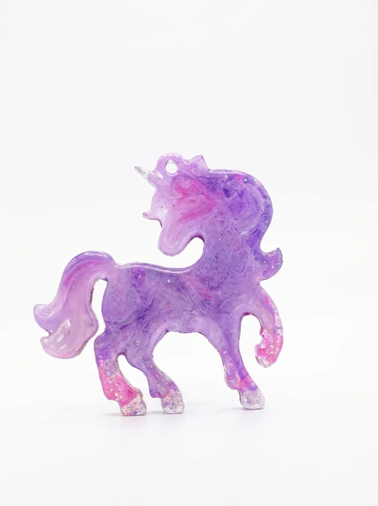

Ёлочные игрушки из эпоксидной смолы: чем они лучше обычных

Ёлочные игрушки из эпоксидной смолы — это небольшие произведения ручного искусства. Прозрачный материал, залитый в форму, превращается в фигурку со стеклянным блеском, внутри которой «застывают» цвет, глиттер и золотая поталь.
Прочность и долговечность
В отличие от стеклянных шаров, смоляные фигурки не разбиваются при падении с ветки на мягкий ковёр и спокойно переживают переезды. Материал не боится влаги и пыли, а глянцевая поверхность долго сохраняет блеск.
Каждая игрушка — уникальна
Рисунок в смоле нельзя повторить один в один: разводы цвета, расположение блёсток и мельчайших пузырьков воздуха зависят от заливки. Поэтому два единорога из одной формы всегда немного разные — и это не недостаток, а главная ценность ручной работы.
Что можно выбрать
- единороги в разных цветовых гаммах — от нежно-сиреневого до готичного винного;
- кареты с ажурными колёсами и вензелями;
- лисы с золотой поталью — рыжий огонь и «крадущийся» золотой силуэт.
Как сочетать с декором
Игрушки из смолы хорошо смотрятся рядом со стеклом, металлом и светом гирлянд: в тёплом свете они искрятся. Для эффектной ёлки возьмите 3–5 игрушек одной цветовой гаммы и добавьте нейтральные шары.
Если нужен свой цвет или набор из нескольких одинаковых фигурок, мастерская изготовит игрушки на заказ — подробности на странице «Под заказ».